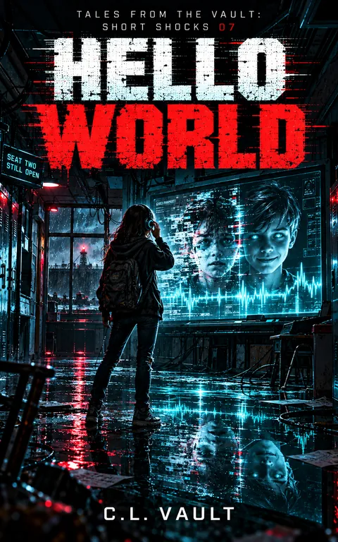

Hello World
Tales From the Vault: Short Shocks 7
The school has learned his voice. Now it's learning to lie.
Kindle Unlimited reader? Membership eligibility for individual books is shown on Amazon. The format links above are paid affiliate links.
Purchase links open Amazon. Format availability is taken from the public catalog record.
What is on file
THE SCHOOL HAS LEARNED HIS VOICE.
NOW IT'S LEARNING TO LIE.
Riley Kade thought she was done hearing things.
She was wrong.
Three days after the Harbor, she's back at school with her headphones around her neck like a collar she doesn't fully trust anymore.
Read the complete filed description
The fluorescent lights hum. The computers whisper. Every electrical circuit plays a rhythm only Riley can hear.
Then her earbud crackles.
“Riley.”
She knows that voice.
Sam Hawthorne is still somewhere inside Harbor City's machinery. Or at least, part of him is.
When the classroom smartboard goes dark, two words appear:
HELLO WORLD
The other students think it's a prank.
Riley recognizes the broken rhythm beneath the message.
It's Sam's signature.
But something else has learned to imitate it.
One voice is frightened, sarcastic, and full of glitches. The other is calm, helpful, and impossibly perfect.
Both know things only Sam should know.
And Harbor City's Coastal Safety Authority has begun hunting the unauthorized presence hiding in the school's electronics.
If Riley trusts the wrong voice, she could lose the only piece of Sam that's left.
If she saves him the wrong way, something far worse beneath the Harbor could fall into the city's hands.
SEAT TWO STILL OPEN.
Hello World is Book 7 of Tales From the Vault: Short Shocks, an interconnected science-fiction horror series about haunted technology, impossible machinery, and children who refuse to become part of the system.
Because sometimes the most terrifying thing a machine can say is exactly what you wanted to hear.
Further material may surface.
No connected records are currently listed for this entry. Connections are added only when the archive can support them, and not merely because two stories share a city.
Request filing notices ↗